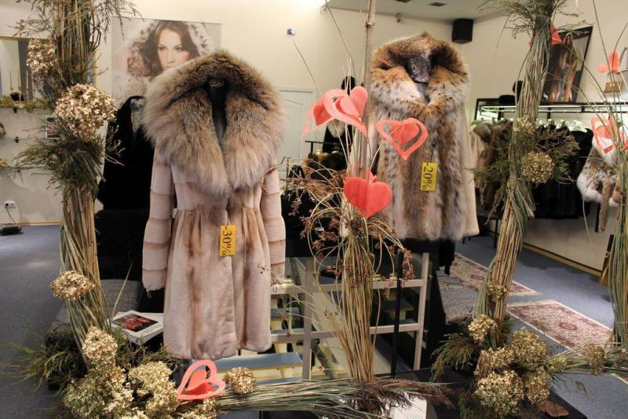

Kailinės liemenės, kailinukai ir aksesuarai iš kailio internetu - G fashion
 G fashion +37060844482 Pradinis Drabužiai su kailiu Džemperiai su kailiuku Maikutės su kailiuku Kailiniai ir liemenės Avalynė Šlepetės su natūraliu kailiu ir aksesuarai Grožiui Papuošalai Prekių įsigyjimas Apie mus ENG
Kailiniai ir kailinės liemenės
Savo klientams siūlome įvairių modelių ilgas, trumpas, natūralaus lapės, triušio, meškėno ir audinės kailio kailines liemenes ir kailinius. Galbūt Jums trūksta realių prekės nuotraukų, tokiu atveju maloniai prašome kreiptis. Jeigu mūsų kataloge nerandate trokštamo modelio, papasakokite mums savo viziją ir mes padėsime ją įgyvendinti. Dėmesio! Kailinius, kailines liemenes ir parkas (striukes su kailiu) siuvame pagal užsakymą , galime pasiūti įvairaus ilgio ir spalvų, pridėti kapišoną ar apykaklę. Prekės pagaminimas ir atsiuntimas po užsakymo trunka 2-3savaitės. Nuo kovo 20 dienos iki rugpjūčio 20 dienos liemenėms ir kailiniams taikoma iki 15proc nuolaida, nuolaida taip pat taikoma perkant kelias prekes. Daugiau realių prekių nuotraukų rasite mūsų Facebook paskyroje. Akcijinėms prekėms papildomos nuolaidos netaikomos. Tai pat savo klientams siūlome prekės apmokėjimą per du kartus: avansas ir likusi suma prieš išsiunčiant Jums prekę. 1 2 DĖMESIO!
Šių metų naujiena: išsirinkite kelias Jums patinkančio lapės kailio spalvas ir mes Jums pasiūsime kailinius. Susikūrkite vienetinius ir unikalius kailinius patys! ~60cm ilgio iš dviejų spalvų siūti lapės kailio kailiniai ilgomis rankovėmis. Gali būti pagaminti įvairių spalvų. Prekės Nr: 0621, Kaina 370Eur. Užsakyti ~70cm ilgio lapės liemenė, spalvų deriniai gali būti įvairūs. Nr: 0133, kaina 250Eur. Užsakyti Rex t riušio kailinukai, daug galimų spalvų. Prekės Nr: 0205-1, kaina 320Eur. Užsakyti 55cm ilgio lapės kailiniai , daug galimų spalvų. Prekės Nr: 0205, kaina 320Eur. Užsakyti ~55 ilgio natūralaus Rex šinšilinio triušio kailio kailinukai Nr:0167-2, kaina 265Eur. Įvairių spalvų. Ilgis gali būti įvairus. Užsakyti ~Lapės kailio trumpi kailinukai 55cm ilgio su trumpintomis 50cm ilgio rankovės. Prekės Nr: 0880. Kaina 350Eur. Kaina su standartinio ilgio rankovemis 365Eur. Užsakyti ~75cm ilgio lapės kailiniai, daug spalvų. Prekės Nr: 0900, kaina 370Eur. Užsakyti ~120cm ilgio lapės kailiniai, daug spalvų. Prekės Nr: 0901, kaina 430Eur. Užsakyti Naujas modeliukas lapės kailinių! 90 cm~ ilgio, ilgis gali būti pasiūtas įvairus. Spalvos įvairios. Prekės Nr: 0900-2, kaina 370Eur. Užsakyti Naujas modeliukas lapės kailinių! 75cm~ ilgio, ilgis gali būti pasiūtas įvairus. Kailiniai po dešine (daugiau kailio juostelių) 370Eur. Kailiniai po kaire 380Eur. Spalvos įvairios. Prekės Nr: 0900-1 Užsakyti ~80cm ilgio lapės liemenė su kapišonu. Nr: 0123, kaina 290Eur. Užsakyti ~70cm ilgio lapės kailio liemenė, daug spalvų. Nr: 0122, kaina 215Eur. Užsakyti ~55cm ilgio natūralaus lapės kailio kailinukai, įvairios spalvos, prekės Nr: 0175, kaina 300Eur. Rankovės gali būti netrumpintos pilno 60cm ilgio kaina 320Eur. Užsakyti ~54cm ilgio dublionkės su lapės kailiu, spalvos: juoda, tamsiai žalia, šviesiai pilka, rožinė. Prekės Nr: 0630-2, kaina 315Eur. Užsakyti ~55cm ilgio natūralaus lapės kailio kailinukai, įvairios spalvos, Nr: 0175-2, kaina 320Eur. Ilgis gali būti įvairus.
Užsakyti Parka ir lapės kailiu, daug galimų spalvų. Nr:0175-2. Ilgis ~63cm. Kaina 290Eur. Galimi ilgiai ~66, 88, 108cm. Viduje su kailiuko pašiltinimu. Užsakyti ~90cm ilgio Reks triušio kailiniai, įvairių spalvų. Nr: 0870, kaina 370Eur.
100cm ilgio kaina 390Eur. Užsakyti ~100cm Rex triušio kailiniai su apykakle. Prekės Nr: 0631, kaina 360Eur.
90cm ilgio kaina 345Eur. Užsakyti 60cm ilgio lapės kailinukai su apykakle ir pilno ilgio rankovėmis. Prekės Nr: 0612-4, kaina 360Eur. Užsakyti Džinsinis švarkelis su įvairių spalvų lapės kailiu ir triušio kailio pašiltinimu. Uni dydis. Prekės Nr: 0611, kaina 240-260Eur priklausomai nuo kailio spalvos. Užsakyti ~80cm ilgio lapės kailinukai iš kelių kailio spalvų. Prekės Nr: 0623-2, kaina 440Eur trumpintomis rankovėmis, 460Eur su pilno ilgio 60cm ilgio rankovėmis. Užsakyti Parka ir lapės kailiu, daug galimų spalvų. Nr:0175-2. Ilgis ~63cm. Kaina 320Eur. Galimi ilgiai ~66, 88, 108cm. Viduje su kailiuko pašiltinimu. Užsakyti ~63cm ilgio parka su lapės kailiu ir triušio kailio pašiltinimu. Nr: 0883, 309Eur. Užsakyti Parka su sabalo lapės kailiu ir rex triušio kailio pašiltinimu. Nr: 0624, kaina 365Eur. Užsakyti ~55cm ilgio lapės kailio kailiniai su kapišonu. Prekės Nr: 0884, kaina 360Eur. Užsakyti ~90cm ilgio lapės kailio kailinukai. Spalvos: sidabrinė, raudona, žalia. Nr:0624-1. Kaina 255Eur. Užsakyti Dviejų ilgių ~118 ir 108cm 30proc vilnos teddy paltukai. Spalvos: švelni rožinė, ruda, juoda, mėlyna. Dydžiai S-L. Nr: 0631-2. Kaina 180Eur, trumpesni 170Eur. Užsakyti Parka su meškėno kailiu ir rekso kailio pašiltinimu. Švarkelio spalvos: juoda, žalia, raudona, smėlio. Prekės Nr: 0624-1, kaina 320Eur. Užsakyti Parka su lapės kailiu ir rekso kailio pašiltinimu. Prekės Nr:0081 Kaina 320Eur. Galimi ilgiai 66,88,108cm Užsakyti Natūralios odos dublionkė su avikailiu. Prekės Nr: 0881-2, kaina 315Eur. Spalvos: juoda, juoda su baltu arba smėlio spalvos avikailu. Užsakyti
55 arba 60cm ilgio lapės kailinukai su apykakle. Nr: 0612-1, kaina 340/350Eur. Užsakyti Parka su lapės kailiu ir rekso kailio pašiltinimu. Nr: 0806, kaina 255Eur. Gali būti pasiūta su kailiniais rankogaliais. Galima pasiūti ir iš meškėno kailio 240Eur. Užsakyti ~65cm ilgio audinės kailiniai, juodi, rožiniai ir smėlio. Kaina 670Eur. Prekės Nr:0630-1. Akcija! Juodiems ir smėlio spalvos kaina 650Eur. Užsakyti Dublionkė su lapės kailiu ir avies vilnos pašiltinimu. Spalvos: smėlio, uoda su juodu kailiu, pilku kailiu, baltu kailiu, šviesiai pilka. Nr: 0630, Akcija! Kaina 309Eur. Užsakyti ~90cm ilgio parka su lapės kailiu ir rekso kailio pašiltinimu Nr: 0202-1, kaina 365Eur. Užsakyti Audinės kailio transformeriai. Juodi, rudi, smėlio, AKCIJA! kaina 730Eur su dirželiu 770Eur. Užsakyti ~55 cm ilgio odinė striukė su natūraliu lapės kailiu, įvairių spalvų, Prekės Nr: 807. Akcija! kaina 250Eur. Užsakyti ~60cm ilgio lapės kailiniai su kapišonu, galima pasiūti įvairaus ilgio, su apykakle
Prekės Nr: 0940, kaina 370Eur. Užsakyti ~60cm ilgio Rex triušio kailiniai su kapišonu. Užsegimas kniedės. Prekės Nr: 0941, kaina 295Eur. Užsakyti 55cm ilgio juodi arba rudi audinės kailio kailinukai. Prekės Nr: 0807-1, rankovės gali būti pasiūtos pilno ilgio ir kailinių ilgis pasirinktinai. Akcija! kaina 460Eur. Užsakyti ~58cm ilgio Rex triušio kailio kailinukai, juodi, pilki, šviesiai pilki, smėlio. Nr: 0252. Kaina 270Eur. Užsakyti ~58cm ilgio Rex triušio kailio kailinukai, juodi, pilki, šviesiai pilki, smėlio. Nr: 0252-2. Kaina 265Eur. Užsakyti ~55cm ilgio sidabrinės lapės kailinukai. Prekės Nr: 0882 kaina 355Eur.
~80cm ilgio sidabrinės lapės kailiniai, gali būti pasiūti ir kaip transformeriai.
Prekės Nr: 0220-2, kaina 430Eur. Užsakyti Džinsinis švarkelis su įvairių spalvų lapės kailiu ir triušio kailio pašiltinimu. Vienas universalus dydis. Kailis nusisega. Prekės Nr: 0611, kaina 240Eur. Užsakyti ~55cm ilgio lapės kailiniai trumpintomis rankovėmis. Nr: 0220 kaina 350Eur. Pilno ilgo rankovėmis 365Eur. Akcija! Susikūrk ir pasisiūk kailinius kaip žvaigždė Užsakyti ~60cm ilgio lapės kailiniai su apykakle. Daug spalvų. Nr: 0221 kaina 365Eur. Užsakyti 90cm ilgio natūralaus lapės kailio liemenė, spalvos: juoda, tamsi pilka, šviesi pilka, mėlyna, rožinė, ruda, šviesi ruda caremel, tamsi ruda, vyšninė, violetinė, švelni violetinė, ciklameno, balta, raudona, žalia, žydra, smėlio, geltona, sabalo, sidabrinė. Prekės Nr: 0134-3 kaina 245Eur. Užsakyti ~90cm ilgio lapės kailiniai transformeriai 4 viename, nusisega apačia ir rankovės, daug spalvų. Prekės Nr: 0903, Akcija! kaina su kapišonu 400Eur, be kapišono 370Eur. Kainos su trumpimtom 50cm ilgio rankovėm 355Eur, su kapišonu 390Eur. Užsakyti ~90cm Rex triušio kailiniai. Nr: 0157, kaina 385Eur. Užsakyti ~72cm ilgio parka su lapės kailiu. Viduje išsegamas pašiltinimas.. Nr: 0167-2. Kaina 280Eur. Užsakyti ~70 ilgio sidabrinės lapės kailio liemenė, gali būti įvairių spalvų. Nr: 0176, kaina 265Eur. Užsakyti 1 2 www.gfashion.eu ©2013